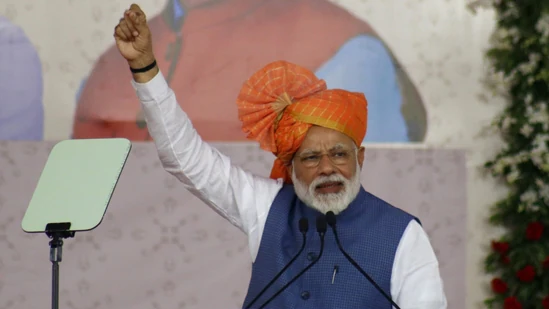

Modi’s embodiment of Gujarati asmita since his first shot at power in the state has dwarfed all else, forming two conflicting narratives, old and new, with the victories and tragedies that define them
The political strategy is obvious: Create an emotional connect between PM Narendra Modi’s leadership and the Gujarati voter to the point where the interests of the two are indistinguishable. (Siddharaj Solanki/HT Photo)
The political strategy is obvious: Create an emotional connect between PM Narendra Modi’s leadership and the Gujarati voter to the point where the interests of the two are indistinguishable. (Siddharaj Solanki/HT Photo)
By Badri Narayan During the 2021 Uttar Pradesh (UP) assembly election, my team and I were studying the social roots of politics in India’s electoral democracy. As part of the study, we interviewed illiterate women from a marginal social group at Phulpur near Prayagraj. During our conversation, the women reiterated that they have only one demand from the government: Quality education for their children.